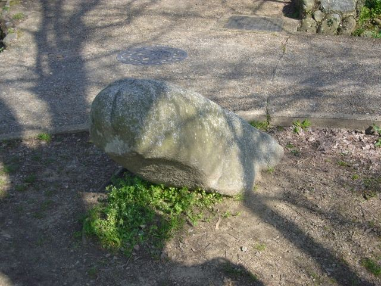
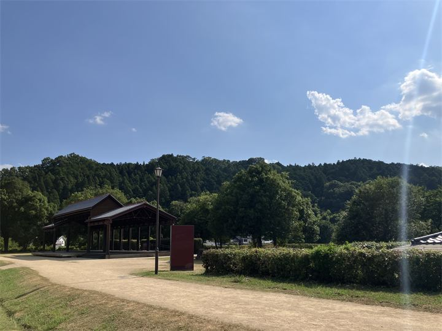

自然豊かな山の風景
四季折々の自然が楽しめる静かな散策スポットです。 山頂からは明日香の里山風景を眺めることができ、麓には古代の石造物「マラ石」が残されています。

フグリ山は、明日香村の自然を感じられる静かな山間の散策スポットです。 奥明日香の豊かな自然に囲まれ、四季折々の草木や里山の風景を楽しむことができます。 観光地化された場所とは異なる、自然の中でゆっくり過ごせる場所です。
| 見学時間 | 自由散策 |
|---|---|
| 定休日 | なし |
| 料金 | 無料 |
| 所要時間 | 30分〜1時間 |
| 駐車場 | 国営飛鳥歴史公園 石舞台地区駐車場 |
| アクセス | 近鉄飛鳥駅から徒歩50分 |
| 地図 | 地図はこちら |

四季折々の自然が楽しめる静かな散策スポットです。 山頂からは明日香の里山風景を眺めることができ、麓には古代の石造物「マラ石」が残されています。
奥明日香地域は、古くから自然と共に暮らしが続いてきた山間の地域です。 棚田や里山の風景が残り、飛鳥中心部とは異なる自然の魅力を感じることができます。